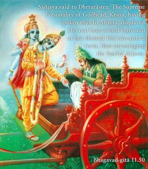
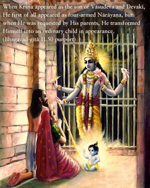
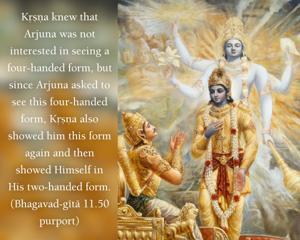
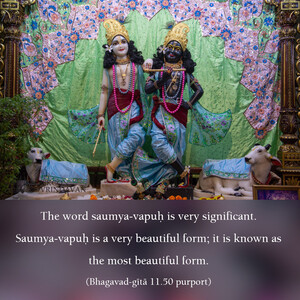
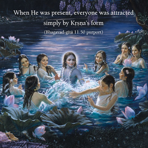

Sañjaya said to Dhṛtarāṣṭra: The Supreme Personality of Godhead, Kṛṣṇa, having spoken thus to Arjuna, displayed His real four-armed form and at last showed His two-armed form, thus encouraging the fearful Arjuna.





When Kṛṣṇa appeared as the son of Vasudeva and Devakī, He first of all appeared as four-armed Nārāyaṇa, but when He was requested by His parents, He transformed Himself into an ordinary child in appearance. Similarly, Kṛṣṇa knew that Arjuna was not interested in seeing a four-handed form, but since Arjuna asked to see this four-handed form, Kṛṣṇa also showed him this form again and then showed Himself in His two-handed form. The word saumya-vapuḥ is very significant. Saumya-vapuḥ is a very beautiful form; it is known as the most beautiful form. When He was present, everyone was attracted simply by Kṛṣṇa’s form, and because Kṛṣṇa is the director of the universe, He just banished the fear of Arjuna, His devotee, and showed him again His beautiful form of Kṛṣṇa. In the Brahma-saṁhitā (5.38) it is stated, premāñjana-cchurita-bhakti-vilocanena: only a person whose eyes are smeared with the ointment of love can see the beautiful form of Śrī Kṛṣṇa.